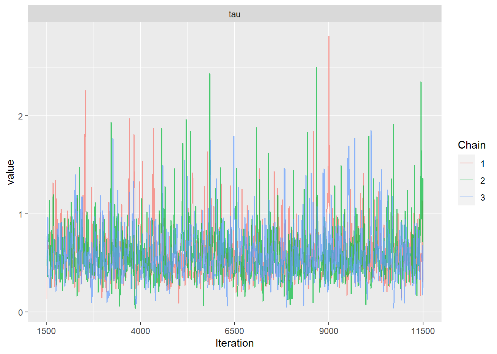
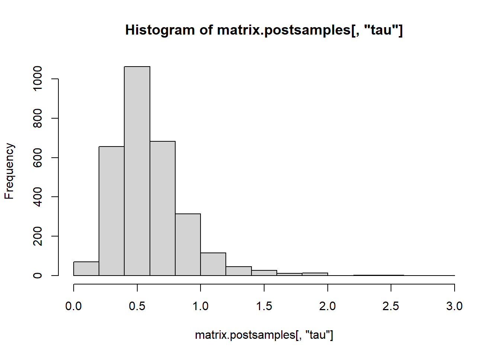

Chapter 3 Regularization
We have seen that multiple regression falls short in the high-dimensional context. It leads to overfitting and as a result in large estimates of regression coefficients. Augmentation of the least-squares optimization with constraints on the regression coefficients can decrease the risk of overfitting. In the following we will discuss methods which minimize the residual sum of squares, \(\rm{RSS}(\beta)\), under some constraints on the parameter \(\beta\).
3.1 Model Selection
We will shortly see that the approaches which we introduce do not only fit one single model but they explore a whole series of models (indexed as \(m=1,\ldots,M\)). Model selection refers to the choice of an optimal model achieving a low generalization error. A plausible approach would be to fit the different models to the training data and then select the model with smallest error on the test data. However, this is an illegitimate approach as the test data has to be kept untouched for the final evaluation of the selected model. Therefore we guide model selection by approximating the generalization error using training data only. We review now two such approximations, namely, cross-validation and the Akaike information criterion (AIC).
K-fold cross-validation approximates the prediction error by splitting the training data into K chunks as illustrated below (here \(K=5\)).

Each chunk is then used as “hold-out” validation data to estimate the error of \(m\)th model trained on the other \(K-1\) data chunks. In that way we obtain \(K\) error estimates and we typically take the average as the cross-validation error of model \(m\) (denoted by \({\rm CV}_m\)). The next plot shows a typical cross-validation error plot. This curve attains its minimum at a model with \(p_m=4\) (\(p_m\) is the number of included predictors in model \(m\)).

The AIC approach is founded in information theory and selects the model with smallest AIC
\[ {\rm AIC}_m=-2\;{\rm loglik}+2\;p_{m}. \] Thus, AIC rewards goodness of fit (as assessed by the likelihood function loglik) and penalizes model complexity (by the term \(2 p_m\)). The figure below shows for the same example the AIC curve. Also the AIC approaches suggests to use a model with \(p_m=4\) predictors.

3.2 Subset- and Stepwise Regression
The most common approach to impose constraints is subset selection. In this approach we retain only a subset of the variables, and eliminate the rest from the model. OLS is used to estimate the coefficients of the inputs that are retained. More formally, given a subset \(S\subset\{1,\ldots,p\}\) we solve the optimization problem
\[ \hat{\beta}_{S}=\text{arg}\!\!\!\!\!\min\limits_{\beta_j=0\;\forall j\notin S}\!\!\!\textrm{RSS}(\beta). \]
It is easy to show that this is equivalent to OLS regression based on subset \(S\) covariates, i.e.
\[ \hat{\beta}_{S}=(\textbf{X}_S^T \textbf{X}_S)^{-1}\textbf{X}_S^T \textbf{y}. \]
In practice we need to explore a sequence of subsets \(S_1,\ldots,S_M\) and choose an optimal subset by either a re-sampling approach or by using an information criterion (see Section 3.1). There are a number of different strategies available. Best subsets regression consists of looking at all possible combinations of covariates. Rather than search though all possible subsets, we can seek a good path through them. Two popular approaches are backward stepwise regression which starts with the full model and sequentially deletes covariates, whereas forward stepwise regression starts with the intercept, and then sequentially adds into the model the covariate that most improves the fit.
In R we can use regsubsets from the leaps package or stepAIC from the MASS package to perform subset- and stepwise regression. For example to perform forward stepwise regression based on AIC we proceed as follows.
# Forward regression
fit0 <- lm(y~1,data=dtrain)
up.model <- paste("~", paste(colnames(dtrain[,-(p+1)]), collapse=" + "))
fit.fw <- stepAIC(fit0,
direction="forward",
scope=
list(lower=fit0,
upper=up.model)
,
trace = FALSE
)We can summarize the stepwise process.
kable(as.data.frame(fit.fw$anova),digits=3,booktabs=TRUE
,caption="Inclusion of covariates in forward stepwise regression.")| Step | Df | Deviance | Resid. Df | Resid. Dev | AIC |
|---|---|---|---|---|---|
| NA | NA | 9 | 22.468 | 10.095 | |
| + X1 | 1 | 20.017 | 8 | 2.450 | -10.064 |
| + X4 | 1 | 0.883 | 7 | 1.567 | -12.535 |
| + X9 | 1 | 0.376 | 6 | 1.191 | -13.277 |
Finally we can retrieve the regression coefficients of the optimal model.
kable(broom::tidy(fit.fw),digits=3,booktabs=TRUE,
caption="Regression coefficients of the optimal model.")| term | estimate | std.error | statistic | p.value |
|---|---|---|---|---|
| (Intercept) | 0.210 | 0.157 | 1.334 | 0.231 |
| X1 | 1.611 | 0.243 | 6.624 | 0.001 |
| X4 | -0.508 | 0.205 | -2.475 | 0.048 |
| X9 | -0.322 | 0.234 | -1.376 | 0.218 |
3.3 Ridge Regression
Subset selection as outlined above works by either including or excluding covariates, i.e. constrain specific regression coefficients to be zero.
An alternative is Ridge regression, which regularizes the optimization problem by shrinking regression coefficients towards zero. This discourages complex models because models that overfit tend to have larger coefficients. Ridge regression can be formulated as a constrained optimization problem
\[ \hat{\beta}^{\rm Ridge}_{c}=\text{arg}\min\limits_{\|\beta\|_2^2\leq c}\textrm{RSS}(\beta). \]
The geometry of the optimization problem is illustrated in Figure 3.1. It shows the levels sets of \({\rm RSS}(\beta)\), ellipsoids centered around the OLS estimate, and the circular ridge parameter constraint, centered around zero with radius \(c > 0\). The Ridge estimator is the point where the smallest level set hits the constraint. Exactly at that point the \(\rm{RSS}(\beta)\) is minimized over those \(\beta\)’s that “live” inside the constraint.

Figure 3.1: Geometry of Ridge regression.
Alternatively, Ridge regression can be cast as the optimization of the penalised residual sum of squares with a penalty on the magnitude of the coefficients, i.e.
\[\hat{\beta}^{\rm Ridge}_{\lambda}=\textrm{arg}\min\limits_{\beta}\textrm{RSS}(\beta)+\lambda\|\beta\|^2_2.\]
Both formulations are equivalent in the sense that there is a one-to-one relationship between the tuning parameters \(c\) and \(\lambda\). We will use more often the latter “penalisation” formulation. The parameter \(\lambda\) is the amount of penalisation. Note that with no penalization, \(\lambda=0\), Ridge regression coincides with OLS. Increasing \(\lambda\) has the effect of shrinking the regression coefficients to zero.
The Ridge optimization problem has the closed form solution (see exercises)
\[\begin{align*} \hat{\beta}^{\rm Ridge}_{\lambda}&=(\textbf{X}^T \textbf{X}+\lambda \textbf{I})^{-1}\textbf{X}^T \textbf{y}. \end{align*}\]
Note that for \(\lambda>0\) the matrix \(\textbf{X}^T \textbf{X}+\lambda \textbf{I}\) has always full rank and therefore Ridge regression is well defined even in the high-dimensional context (in contrast to OLS).
Ridge regression is implemented in the package glmnet. We use alpha=0 and can call
fit.ridge.glmnet <-glmnet(x=xtrain,y=ytrain,alpha=0)
plot(fit.ridge.glmnet,xvar="lambda",label=TRUE)
3.3.1 Choice of penalty parameter
In subset- and stepwise regression we had to identify the optimal subset. Similarly, for Ridge regression model selection consists of selecting the tuning parameter \(\lambda\). We proceed by choosing a grid of values \(0<\lambda_1<\lambda_2<\ldots<\lambda_M<\infty\) and proceed as explained in Section 3.1, that is we choose the optimal \(\lambda_{\rm opt}\) by either re-sampling or information criteria. In glmnet we use cross-validation using the command cv.glmnet.
cv.ridge.glmnet <-cv.glmnet(x=xtrain,y=ytrain,alpha=0) The next plot shows the cross-validation error with upper and lower standard deviations as a function of the lambda values (note the log scale for the lambdas).
plot(cv.ridge.glmnet)
The tuning parameter with the smallest cross-validation error is stored in the argument lambda.min.
cv.ridge.glmnet$lambda.min## [1] 0.8286695Another choice is lambda.1se which denotes the largest \(\lambda\) within 1 standard error of the smallest cross-validation error.
cv.ridge.glmnet$lambda.1se## [1] 3.6715213.3.2 Shrinkage property
The OLS estimator becomes unstable (high variance) in presence of collinearity. A nice property of Ridge regression is that it counteracts this by shrinking low-variance components more than high-variance components.
This can be best understood by rotating the data using a principle component analysis (see Figure 3.2). In particular, we consider the singular value decomposition
\[\textbf{X}=\textbf{U}\textbf{D}\textbf{V}^T,\]
where the columns of \(\textbf{U}\) form an orthonormal basis of the column space of \(\textbf{X}\), \(\textbf{D}\) is a diagonal matrix with entries \(d_1\geq d_2\geq\ldots\geq d_p \geq 0\) called the singular values, and the columns of \(\textbf{V}\) represent the principle component directions. For OLS the vector of fitted values \({\bf \hat y}^{\rm OLS}\) is the orthogonal projection of \({\bf y}\) onto the column space of \(\bf X\). Therefore, in terms of rotated data we have
\[\hat{\textbf{y}}^{\rm OLS}=\sum_{j=1}^{p}\textbf{u}_j \textbf{u}_j^T \textbf{y}.\]
Similarly, we can represent the fitted values from Ridge regression as
\[\hat{\textbf{y}}^{\rm Ridge}=\sum_{j=1}^{p}\textbf{u}_j \frac{d_j^2}{d_j^2+\lambda}\textbf{u}_j^T\textbf{y}.\]
This shows that the level of shrinkage \(\frac{d_j^2}{d_j^2+\lambda}\) is largest in the direction of the last principle component, which in return is the direction where the data exhibits smallest variance.

Figure 3.2: Left plot: 2-dimensional input data. Right plot: input data rotated using principle component analysis.
3.3.3 Effective degrees of freedom
Although Ridge regression involves all \(p\) covariates the effective degrees of freedom are smaller than \(p\) as we have imposed constraints through the penalty. In the book Hastie, Tibshirani, and Friedman (2001) it is shown that the effective degrees of freedom for Ridge regression, \(\nu^{\rm ridge}_{\lambda}\), are given by
\[\nu^{\rm ridge}_{\lambda}=\sum_{j=1}^{p}\frac{d_j^2}{d_j^2+\lambda},\] where \(d_1,\ldots,d_p\) are the singular values of \(\bf X\).
# get singular values
fit.svd <- svd(xtrain) #fit.svd$d
# ridge degree of freedom for lambdaopt
df_lambdaopt <- sum(fit.svd$d^2/(fit.svd$d^2+cv.ridge.glmnet$lambda.min))
df_lambdaopt## [1] 6.1670423.3.4 Bayesian interpretation
We have introduced regularization by least-squares optimization with additional constraints on \(\beta\). An alternative approach to regularization is based on Bayesian statistics. In a Bayesian setting the parameter \(\beta=(\beta_1,\ldots,\beta_p)\) is itself a random variable with prior distribution \(p(\beta)\). Bayesian inference is based on the posterior distribution \[p(\beta|D)=\frac{p(D|\beta)p(\beta)}{p(D)},\] where \(D\) denotes the data and \(p(D|\beta)\) is the likelihood function. In the exercises we will show that the Ridge solution can be viewed as the maximum a posteriori (MAP) estimate of a hierarchical Bayesian model where the data follows a multivariate regression model \[Y_i|X_i,\beta\sim N(X_i^T\beta,\sigma^2),\; i=1,\ldots,n\] and the regression coefficients are equipped with prior \[\beta_j \sim N(0,\tau^2),\; j=1,\ldots,p.\]
For many practical problems the posterior distribution is analytically not tractable and inference is typically based on sampling from the posterior distribution using a procedure called Markov chain Monte Carlo (MCMC). The software packages BUGS and JAGS automatically build MCMC samplers for complex hierarchical models. We use rjags to illustrate the procedure for the Bayesian Ridge regression model (see Figure 3.3).

Figure 3.3: The Bayesian Ridge regression model.
First we specify the model, prepare the input data and provide initial values.
library(rjags)
# model
bayesian_ridge <-"model{
for (i in 1:n){
y[i] ~ dnorm (mu[i], 1/sig^2)
mu[i] <- inprod(b,x[i,])
}
for (j in 1:p){
b[j] ~ dnorm (0, 1/tau^2)
}
sig~dunif(0,100)
tau~dunif(0,100)
}
"
# data
dat.jags <- list(x=xtrain,y=ytrain,p=ncol(xtrain),n=nrow(xtrain))
# initial values
inits <- function (){
list (b=rnorm(dat.jags$p),sig=runif(1),tau=runif(1))
}We use the function jags.model to setup an MCMC sampler with n.chains=3 chains (the number of samples, or MCMC iterations, used for adaptation is per default set to 1000).
# setup jags model
jags.m <- jags.model(textConnection(bayesian_ridge),
data=dat.jags,
inits=inits,
n.chains=3,
quiet=TRUE)After a burn-in period of \(500\) steps we use coda.samples to generate the posterior samples.
# burn-in
update(jags.m, n.iter=500)
# mcmc samples for inference
posterior.samples <- coda.samples( jags.m,
variable.names = c("b","sig","tau"),
n.iter=10000,thin=10) # thinning=10 There are several R packages to investigate the posterior distribution. For example with MCMCsummary we can extract key summary information, i.e. mean, median, quantiles, Gelman-Rubin convergence statistic and the number of effective samples.
library(MCMCvis)
MCMCsummary(posterior.samples,
round=2,
params=c("sig","tau","b"))%>%
kable| mean | sd | 2.5% | 50% | 97.5% | Rhat | n.eff | |
|---|---|---|---|---|---|---|---|
| sig | 0.85 | 0.40 | 0.34 | 0.75 | 1.84 | 1.01 | 1942 |
| tau | 0.59 | 0.28 | 0.20 | 0.54 | 1.31 | 1.00 | 1720 |
| b[1] | 0.75 | 0.57 | -0.20 | 0.70 | 2.07 | 1.00 | 1685 |
| b[2] | -0.09 | 0.30 | -0.70 | -0.09 | 0.49 | 1.00 | 2486 |
| b[3] | -0.29 | 0.37 | -1.03 | -0.28 | 0.46 | 1.00 | 2202 |
| b[4] | -0.18 | 0.36 | -0.89 | -0.18 | 0.54 | 1.00 | 2858 |
| b[5] | -0.13 | 0.53 | -1.28 | -0.10 | 0.92 | 1.00 | 2261 |
| b[6] | -0.15 | 0.32 | -0.77 | -0.15 | 0.50 | 1.00 | 2601 |
| b[7] | -0.05 | 0.31 | -0.62 | -0.06 | 0.60 | 1.00 | 2227 |
| b[8] | -0.53 | 0.43 | -1.39 | -0.52 | 0.25 | 1.00 | 2535 |
| b[9] | -0.16 | 0.40 | -0.94 | -0.16 | 0.68 | 1.00 | 2337 |
Or, we can use the packageggmcmc and produce a traceplot to check the representativeness of the MCMC samples.
library(ggmcmc)
ggs.mcmc <- ggs(posterior.samples)
ggs_traceplot(ggs.mcmc,family="tau")
Alternatively, we can directly access the posterior samples and calculate any summary statistics of interest.
# posterior samples as matrix
matrix.postsamples <- as.matrix(posterior.samples)
dim(matrix.postsamples)## [1] 3000 11# histogram of posterior
hist(matrix.postsamples[,"tau"])
# posterior mean
colMeans(matrix.postsamples) # posterior mean## b[1] b[2] b[3] b[4] b[5] b[6]
## 0.75353972 -0.09379089 -0.28809773 -0.17838102 -0.13035813 -0.14808744
## b[7] b[8] b[9] sig tau
## -0.04902422 -0.52832755 -0.16481996 0.84774078 0.59421872Finally, we compare the regression coefficients from OLS, Ridge regression (\(\lambda\) obtained using cross-validation) and Bayesian Ridge regression.

The coefficients obtained from Ridge regression and Bayesian Ridge regression are almost identical.
3.3.5 Splines
Ridge regression and high-dimensionality play a role in many subfields of statistics. We illustrate this with the example of smoothing splines for univariate non-parametric regression.
Sometimes it is extremely unlikely that the true function \(f(X)\) is actually linear in \(X\). Consider the following example.

Figure 3.4: Non-linear (sinusoidal) relationship between Y and X.
How can we approximate the relationship between Y and X? The most simple approximation is a straight horizontal line (dashed blue line; the true sinusoidal function is depicted in black).

Figure 3.5: Approximation by a constant.
Clearly this approximation is too rigid. Next, we try a piecewise constant approximation with two inner “knots”.

Figure 3.6: Piecewise constant approximation.
Finally, we use a piecewise linear function.

Figure 3.7: Piecewise linear approximation.
The approximation improves. Nevertheless it would be nice if the different line segments would line up. What we need are piecewise polynomials which are “smooth” at the knots. Such functions are called “splines”. We assume that \(f\) can be expressed by a set of basis functions
\[ f(X)=\sum_{j=1}^{p}\beta_j B_j(X).\]
For example for a cubic spline with \(K\) fixed knots and fixed polynomial degree \(d=3\) (“cubic”) we have \(p=K+d+1\) and the \(B_j(x)\)’s form a B-spline basis (one could also use the truncated-power basis). The coefficients \(\beta_m\) are estimated using OLS. Although we have only one single variable \(X\), the design matrix consists of \(p=K+d+1\) features and we quickly run into issues due to overfitting. In R we obtain a B-spline basis with bs and we can plot the basis functions \(B_j(x)\) as follows.
spl <- bs(x,df=10) # cubic spline with p=10 degrees of freedom
plot(spl[,1]~x, ylim=c(0,max(spl)), type='l', lwd=2, col=1,
xlab="Cubic B-spline basis", ylab="")
for (j in 2:ncol(spl)) lines(spl[,j]~x, lwd=2, col=j)
The estimated coefficients \(\hat \beta_j\) are obtain using lm.
fit.csp <- lm(y~spl)
#fit.csp <- lm(y~bs(x,df=10))
coef(fit.csp)## (Intercept) spl1 spl2 spl3 spl4 spl5
## -0.1664090 0.6710022 1.0956429 1.2056968 0.9713568 0.2323033
## spl6 spl7 spl8 spl9 spl10
## -0.2876482 -1.2456044 -0.3914716 0.2894841 -0.4376537The cubic spline with \(p=10\) degrees of freedom fits the data well as shown in the next plot (in dashed violet).
plot(x, y)
lines(x, fx, lwd = 2)
lines(x, predict(fit.csp), lty = 2, col = "violet",lwd=3)
An alternative approach are so-called smoothing splines, where we take \(p=n\) and the \(B_j(x)\)’s are an n-dimensional set of basis functions representing the family of natural cubic splines with knots at the unique values of \(x_i\), \(i=1,\ldots,n\). The coefficients \(\beta_j\) cannot be estimated using OLS as the number \(p\) of basis functions (columns of the design matrix) equals the number of observations \(n\). Smoothing splines overcome this hurdle by imposing a generalized ridge penalty on the spline coefficients \(\beta_j\), i.e.
\[\hat{\beta}_{\lambda}=\textrm{arg}\min\limits_{\beta}\;\|\textbf{y}- \textbf{B} \beta\|^2+\lambda \beta^T\Omega\beta,\]
where \(\bf B\) is the design matrix with \(jth\) column \((B_j(x_1),\ldots,B_j(x_n))^T\). In practice we can fit
smoothing splines using the function smooth.spline. The penalty term is specified by setting the effective degrees of freedom \(\nu\) or by selecting \(\lambda\) using cross-validation (see Section 3.3.1).
We fit smoothing splines to our simulation example.
# smoothing spline with 10 effective degrees of freedom
fit.smsp.df10 <- smooth.spline(x, y, df = 10)
# smoothing spline with 30 effective degrees of freedom
fit.smsp.df30 <- smooth.spline(x, y, df = 30)
# smoothing spline with effective degrees of freedom estimated by cv
fit.smsp.cv <- smooth.spline(x, y)
plot(x, y)
lines(x, fx, lwd = 2)
lines(x, fit.smsp.df10$y, lty = 2, col = "blue",lwd=3)
lines(x, fit.smsp.df30$y, lty = 3, col = "green",lwd=3)
lines(x, fit.smsp.cv$y, lty = 4, col="red",lwd=3)
legend(0.7,1.5,
lty=1:4,
lwd=3,
col=c("black","blue","green","red"),
legend=c("truth","cubic p=10","cubic p=30","smoothing"))
The smoothing spline with \(\nu=30\) (in green) leads to overfitting. The smoothing splines obtained by cross-validation (in red) or by fixing \(\nu=10\) (in blue) are both good approximation of the truth. The corresponding effective degrees of freedom of the cross-validation solution can be retrieved from the model fit.
fit.smsp.cv$df## [1] 6.4582473.4 Lasso Regression
We have discussed Ridge regression and discussed its properties. Although Ridge regression can deal with high-dimensional data a disadvantage compared to subset- and stepwise regression is that it does not perform variable selection and therefore the interpretation of the final model is more challenging.
In Ridge regression we minimize \(\rm RSS(\beta)\) given constraints on the so-called L2-norm of the regression coefficients
\[\|\beta\|^2_2=\sum_{j=1}^p \beta^2_j \leq c.\]
Another very popular approach in high-dimensional statistics is Lasso regression (Lasso=least absolute shrinkage and selection operator). The Lasso works very similarly. The only difference is that constraints are imposed on the L1-norm of the coefficients
\[\|\beta\|_1=\sum_{j=1}^p |\beta_j| \leq c.\]
Therefore the Lasso is referred to as L1 regularization. The change in the form of the constraints (L2 vs L1) has important implications. Figure 3.8 illustrates the geometry of the Lasso optimization. Geometrically the Lasso constraint is a diamond with “corners” (the Ridge constraint is a circle). If the sum of squares “hits” one of these corners then the coefficient corresponding to the axis is shrunk to zero. As \(p\) increases, the multidimensional diamond has an increasing number of corners, and so it is highly likely that some coefficients will be set to zero. Hence, the Lasso performs not only shrinkage but it also sets some coefficients to zero, in other words the Lasso simultaneously performs variable selection. A disadvantage of the “diamond” geometry is that in general there is no closed form solution for the Lasso (the Lasso optimisation problem is not differentiable at the corners of the diamond).

Figure 3.8: Geometry of Lasso regression.
Similar to Ridge regression the Lasso can be formulated as a penalisation problem
\[ \hat{\beta}^{\rm Lasso}_{\lambda}=\text{arg}\min\limits_{\beta}\;\textrm{RSS}(\beta)+\lambda\|\beta\|_1. \]
To fit the Lasso we use glmnet (with \(\alpha=1\)).
fit.lasso.glmnet <-glmnet(x=xtrain,y=ytrain,alpha=1) The following figure shows the Lasso solution for a grid of \(\lambda\) values. We note that the Lasso shrinks some coefficients to exactly zero.
plot(fit.lasso.glmnet,xvar="lambda",label=TRUE)
We choose the optimal tuning parameter \(\lambda_{\rm opt}\) by cross-validation.
cv.lasso.glmnet <-cv.glmnet(x=xtrain,y=ytrain,alpha=1)
plot(cv.lasso.glmnet)
cv.lasso.glmnet$lambda.min## [1] 0.2201019The coefficient for the optimal model can be extracted using the coef function.
beta.lasso <- coef(fit.lasso.glmnet, s = cv.lasso.glmnet$lambda.min)
names(beta.lasso) <- colnames(xtrain)
beta.lasso## 10 x 1 sparse Matrix of class "dgCMatrix"
## s1
## (Intercept) 0.08727244
## V1 1.44830414
## V2 -0.04302609
## V3 .
## V4 -0.07325330
## V5 .
## V6 .
## V7 .
## V8 -0.24778236
## V9 .We now discuss some properties of the Lasso.
3.4.1 Numerical optimization and soft thresholding
In general there is no closed-form solution for the Lasso. The optimization has to be performed numerically. An efficient algorithm is implemented in glmnet and is referred to as “Pathwise Coordinate Optimization”. The algorithm updates one regression coefficient at a time using the so-called soft-thresholding function. This is done iteratively until some convergence criterion is met.
An exception is the case with an orthonormal design matrix \(\bf X\), i.e. \(\bf X^T\bf X=\bf I\). Under this assumption we have
\[\begin{align*} \textrm{RSS}(\beta)&=(\textbf{y}-\textbf{X}\beta)^T(\textbf{y}-\textbf{X}\beta)\\ &=\textbf{y}^T\textbf{y}-2\beta^T\hat\beta^{\rm OLS}+\beta^T\hat\beta \end{align*}\]
and therefore the Lasso optimization reduces to \(j=1,\ldots,p\) univariate problems
\[\textrm{minimize}\; -\hat\beta_j^{\rm OLS}\beta_j+0.5\beta_j^2+0.5\lambda |\beta_j|.\]
In the exercises we will show that the solution is
\[\begin{align*} \hat{\beta}_{\lambda,j}^{\textrm{Lasso}}&=\textrm{sign}(\hat{\beta}_j^{\rm OLS})\left(|\hat{\beta}_j^{\rm OLS}|-0.5\lambda\right)_{+}\\ &=\left\{\begin{array}{ll} \hat\beta^{\rm OLS}_j-0.5\lambda & {\rm if}\;\hat\beta^{\rm OLS}_j>0.5\lambda\\ 0 & {\rm if}\;|\hat\beta^{\rm OLS}_j|\leq 0.5\lambda\\ \hat\beta^{\rm OLS}_j+0.5\lambda & {\rm if}\;\hat\beta^{\rm OLS}_j<-0.5\lambda \end{array} \right. \end{align*}\]
That is, in the orthonormal case, the Lasso is a function of the OLS estimator. This function, depicted in the next figure, is referred to as soft-thresholding.

Figure 3.9: Soft-thresholding function.
The soft-thresholding function is not only used for numerical optimization of the Lasso but also plays a role in wavelet thresholding used for signal and image denoising.
3.4.2 Variable selection
We have seen that the Lasso simultaneously shrinks coefficients and sets some of them to zero. Therefore the Lasso performs variable selection which leads to more interpretabel models (compared to Ridge regression). For the Lasso we can define the set of selected variables
\[\hat S^{\rm Lasso}_{\lambda}=\{j\in (1,\ldots,p); \hat\beta^{\rm Lasso}_{\lambda,j}\neq 0\}\]
In our example this set can be obtained as follows.
Shat <- rownames(beta.lasso)[which(beta.lasso != 0)]
Shat## [1] "(Intercept)" "V1" "V2" "V4" "V8"An interesting question is whether the Lasso does a good or bad job in variable selection. That is, does \(\hat S^{\rm Lasso}_{\lambda}\) tend to agree with the true set of active variables \(S_0\)? Or, does the Lasso typically under- or over-select covariates? These questions are an active field of statistical research.
3.4.3 Elasticnet Regression
We have encountered the L1 and L2 penalty. The Lasso (L1) penalty has the nice property that it leads to sparse solutions, i.e. it simultaneously performs variable selection. A disadvantage is that the Lasso penalty is somewhat indifferent to the choice among a set of strong but correlated variables. The Ridge (L2) penalty, on the other hand, tends to shrink the coefficients of correlated variables toward each other. An attempt to take the best of both worlds is the elastic net penalty which has the form
\[\lambda \Big(\alpha \|\beta\|_1+(1-\alpha)\|\beta\|_2^2\Big).\]
The second term encourages highly correlated features to be averaged, while the first term encourages a sparse solution in the coefficients of these averaged features.
In glmnet the elastic net regression is implemented using the mixing parameter \(\alpha\). The default is \(\alpha=1\), i.e. the Lasso.
3.5 Diabetes example
We now review what we have learned with an example. The data that we consider consist of observations on 442 patients, with the response of interest being a quantitative measure of disease progression one year after baseline. There are ten baseline variables — age, sex, body-mass index, average blood pressure, and six blood serum measurements — plus quadratic terms, giving a total of \(p=64\) features. The task for a statistician is to construct a model that predicts the response \(Y\) from the covariates. The two hopes are, that the model would produce accurate baseline predictions of response for future patients, and also that the form of the model would suggest which covariates were important factors in disease progression.
We start by splitting the data into training and test data.
diabetes <- readRDS(file="data/diabetes.rds")
data <- as.data.frame(cbind(y=diabetes$y,diabetes$x2))
colnames(data) <- gsub(":",".",colnames(data))
train_ind <- sample(seq(nrow(data)),size=nrow(data)/2)
data_train <- data[train_ind,]
xtrain <- as.matrix(data_train[,-1])
ytrain <- data_train[,1]
data_test <- data[-train_ind,]
xtest <- as.matrix(data_test[,-1])
ytest <- data_test[,1]We perform forward stepwise regression.
# Forward regression
fit0 <- lm(y~1,data=data_train)
up.model <- paste("~",
paste(
colnames(data_train[,-1]),collapse=" + ")
)
fit.fw <- stepAIC(fit0,direction="forward",
scope=list(lower=fit0,
upper=up.model
),
trace = FALSE
)
#summary(fit.fw)The selection process is depicted in the following table.
kable(as.data.frame(fit.fw$anova),digits=2,
booktabs=TRUE)| Step | Df | Deviance | Resid. Df | Resid. Dev | AIC |
|---|---|---|---|---|---|
| NA | NA | 220 | 1262297.5 | 1913.71 | |
| + bmi | 1 | 434735.33 | 219 | 827562.1 | 1822.40 |
| + ltg | 1 | 155835.95 | 218 | 671726.2 | 1778.30 |
| + age.sex | 1 | 47106.62 | 217 | 624619.6 | 1764.23 |
| + map | 1 | 29740.28 | 216 | 594879.3 | 1755.45 |
| + bmi.glu | 1 | 22952.37 | 215 | 571926.9 | 1748.75 |
| + hdl | 1 | 19077.03 | 214 | 552849.9 | 1743.25 |
| + sex | 1 | 15702.72 | 213 | 537147.2 | 1738.89 |
| + hdl.tch | 1 | 9543.83 | 212 | 527603.3 | 1736.92 |
| + sex.ldl | 1 | 5735.62 | 211 | 521867.7 | 1736.51 |
| + tch.ltg | 1 | 6279.00 | 210 | 515588.7 | 1735.83 |
| + age.map | 1 | 5342.10 | 209 | 510246.6 | 1735.53 |
The regression coefficients and the corresponding statistics of the AIC-optimal model are shown next.
kable(broom::tidy(fit.fw),digits=2,
booktabs=TRUE)| term | estimate | std.error | statistic | p.value |
|---|---|---|---|---|
| (Intercept) | 155.72 | 3.36 | 46.29 | 0.00 |
| bmi | 466.07 | 81.82 | 5.70 | 0.00 |
| ltg | 497.33 | 94.05 | 5.29 | 0.00 |
| age.sex | 274.22 | 76.35 | 3.59 | 0.00 |
| map | 315.78 | 80.98 | 3.90 | 0.00 |
| bmi.glu | 206.59 | 74.57 | 2.77 | 0.01 |
| hdl | -392.14 | 94.40 | -4.15 | 0.00 |
| sex | -201.94 | 80.87 | -2.50 | 0.01 |
| hdl.tch | -210.17 | 87.81 | -2.39 | 0.02 |
| sex.ldl | 118.77 | 74.81 | 1.59 | 0.11 |
| tch.ltg | -146.12 | 89.83 | -1.63 | 0.11 |
| age.map | 119.49 | 80.78 | 1.48 | 0.14 |
We continue by fitting Ridge regression. We show the trace plot and the cross-validation plot.
# Ridge
set.seed(1515)
fit.ridge <- glmnet(xtrain,ytrain,alpha=0)
fit.ridge.cv <- cv.glmnet(xtrain,ytrain,alpha=0)
plot(fit.ridge,xvar="lambda")
plot(fit.ridge.cv)
Finally, we run the Lasso approach and show the trace and the cross-validation plots.
# Lasso
set.seed(1515)
fit.lasso <- glmnet(xtrain,ytrain,alpha=1)
fit.lasso.cv <- cv.glmnet(xtrain,ytrain,alpha=1)
plot(fit.lasso,xvar="lambda")
plot(fit.lasso.cv)#fit.lasso.cv$lambda.1se
We calculate the root-mean-square errors (RMSE) on the test data and compare with the full model.
# Full model
fit.full <- lm(y~.,data=data_train)
# RMSE
pred.full <- predict(fit.full,newdata=data_test)
pred.fw <- predict(fit.fw,newdata=data_test)
pred.ridge <- as.vector(predict(fit.ridge,newx=xtest,s=fit.ridge.cv$lambda.1se))
pred.lasso <- as.vector(predict(fit.lasso,newx=xtest,s=fit.lasso.cv$lambda.1se))
res.rmse <- data.frame(
method=c("full","forward","ridge","lasso"),
rmse=c(RMSE(pred.full,ytest),RMSE(pred.fw,ytest),
RMSE(pred.ridge,ytest),RMSE(pred.lasso,ytest)))
kable(res.rmse,digits = 2,
booktabs=TRUE)| method | rmse |
|---|---|
| full | 84.51 |
| forward | 59.89 |
| ridge | 62.63 |
| lasso | 58.47 |
The Lasso has the lowest generalization error (RMSE). We plot the regression coefficients for all 3 methods.

We point out that the same analysis can be conducted with the caret package. The code to do so is provided next.
## Setup trainControl: 10-fold cross-validation
tc <- trainControl(method = "cv", number = 10)
## Ridge
lambda.grid <- fit.ridge.cv$lambda
fit.ridge.caret<-train(x=xtrain,
y=ytrain,
method = "glmnet",
tuneGrid = expand.grid(alpha = 0,
lambda=lambda.grid),
trControl = tc
)
# CV curve
plot(fit.ridge.caret)
# Best lambda
fit.ridge.caret$bestTune$lambda
# Model coefficients
coef(fit.ridge.caret$finalModel,fit.ridge.cv$lambda.1se)%>%head
# Make predictions
fit.ridge.caret %>% predict(xtest,s=fit.ridge.cv$lambda.1se)%>%head
## Lasso
lambda.grid <- fit.lasso.cv$lambda
fit.lasso.caret<-train(x=xtrain,
y=ytrain,
method = "glmnet",
tuneGrid = expand.grid(alpha = 1,
lambda=lambda.grid),
trControl = tc
)
# CV curve
plot(fit.lasso.caret)
# Best lambda
fit.lasso.caret$bestTune$lambda
# Model coefficients
coef(fit.lasso.caret$finalModel,
fit.lasso.caret$bestTune$lambda)%>%head
# Make predictions
fit.lasso.caret%>%predict(xtest,
s=fit.ridge.cv$lambda.1se)%>%head
## Compare Ridge and Lasso
models <- list(ridge= fit.ridge.caret,lasso = fit.lasso.caret)
resamples(models) %>% summary( metric = "RMSE")